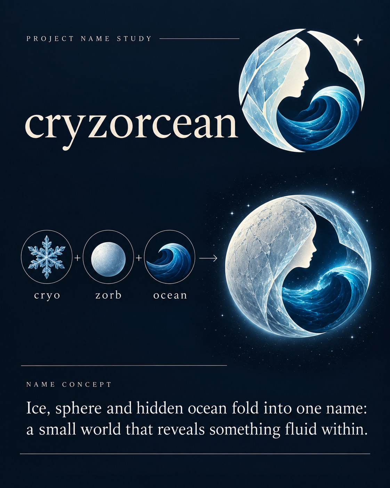

cryzorcean
cryo + zorb + ocean
Ice, sphere and hidden ocean fold into one name: a small world that reveals something fluid within.
Logo direction
A crystalline circular shell opening around a flowing ocean wave; the negative-space center hints at a projected human profile.
Palette: glacial cyan, deep ocean blue, pearl.